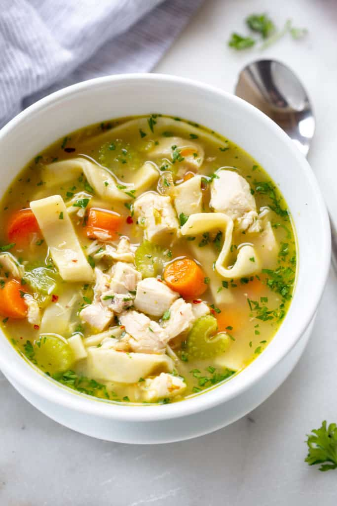
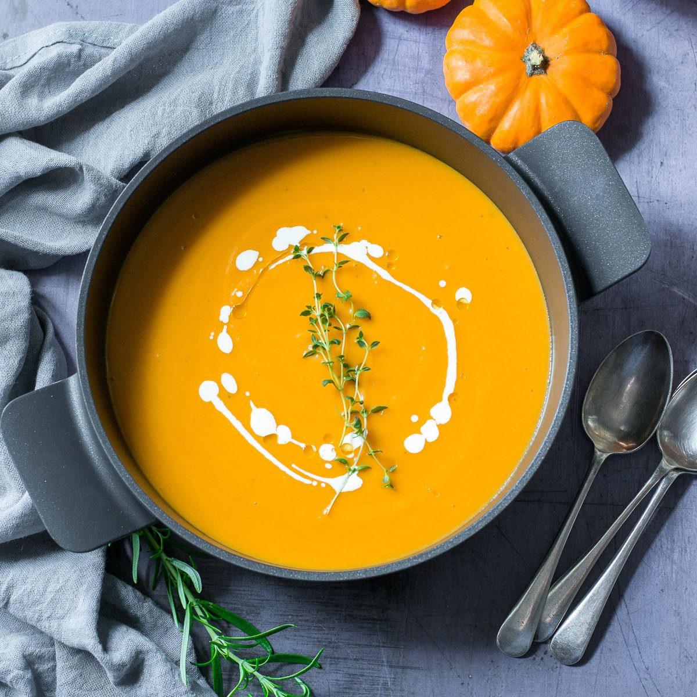

.webp) Comfort Soups
Comfort Soups
Warm and comforting soups perfect for any season

Traditional Borscht
Rich Ukrainian beet soup with vegetables and sour cream. A hearty, nutritious soup perfect for cold days.
2 hours
Medium
Ukrainian

Chicken Noodle Soup
Classic comfort soup with tender chicken, fresh vegetables, and homemade noodles in a savory broth.
1 hour
Easy
American

Hearty Lentil Soup
Nutritious and filling soup packed with protein-rich lentils, vegetables, and aromatic spices.
45 mins
Easy
Vegetarian

Italian Minestrone
Classic Italian vegetable soup with pasta, beans, and fresh herbs in a rich tomato broth.
1.5 hours
Medium
Italian

Traditional Miso Soup
Authentic Japanese soup with fermented soybean paste, silky tofu, and wakame seaweed.
15 mins
Easy
Japanese

Creamy Pumpkin Soup
Smooth and velvety autumn soup with roasted pumpkin, warming spices, and coconut cream.
50 mins
Medium
Vegetarian

Tomato Basil Soup
Fresh and vibrant soup with ripe tomatoes, aromatic basil leaves, and a touch of cream.
40 mins
Easy
Vegetarian